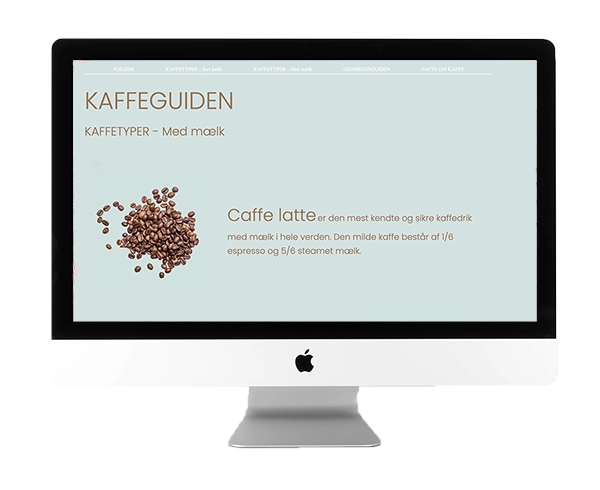

Emnesite
I opgave 02.02.01 benyttede vi læring fra tidligere til at udarbejde en hjemmeside med et selvvalgt emne. Opgaven skulle tage udgangspunkt i stilprincipper som retro design, futuristisk design, modernisme eller brutalisme. Jeg valgte at arbejde med stilen modernisme, hvor budskabet bliver præsenteret tydeligt gennem få elementer. Ved at benytte rene farver, harmonisk layout og simpel struktur udarbejdede jeg et emnesite om kaffe. For at nå frem til det rette design lavede jeg moodboard, wireframe, layoutdiagram, mock-up og styletile.
Besøg hjemmesiden
